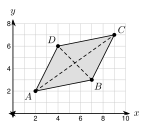
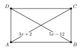

4.4 Quadrilaterals and Their Properties
- Name the quadrilaterals and place them in the family tree
- Use the properties of parallelograms to find sides and angles, and check a parallelogram with coordinates
- Use the properties of rectangles, rhombuses, and squares
- Use the properties of trapezoids, isosceles trapezoids, and kites
- Decide if a statement is always, sometimes, or never true, and give a counterexample
Warm-Up
1. 90°
2. (4, 4)
3. x = 8
4.4.1The Quadrilateral Family
- A quadrilateral has 4 sides. Its 4 angles add to 360°.
- Trapezoid: exactly one pair of parallel sides. Kite: two pairs of congruent sides that are next to each other.
- Parallelogram: both pairs of opposite sides are parallel.
- Rectangle: a parallelogram with 4 right angles. Rhombus: a parallelogram with 4 congruent sides.
- Square: a rectangle and a rhombus. It has 4 right angles and 4 congruent sides.

Give the most specific name for each quadrilateral.
a. Four congruent sides and four right angles: square
b. Both pairs of opposite sides parallel, four right angles, sides not all equal: rectangle
c. Exactly one pair of parallel sides: trapezoid
d. Four congruent sides, angles not right angles: rhombus
a. A quadrilateral has two pairs of congruent sides that are next to each other. The opposite sides are not congruent. What is it?
A kite.
b. Is every square a rectangle? Use the family tree.
Yes. A square is below rectangle on the tree. It has 4 right angles.
4.4.2Parallelograms
- Opposite sides of a parallelogram are congruent.
- Opposite angles are congruent.
- Consecutive angles (angles next to each other) are supplementary. They add to 180°.
- The diagonals bisect each other. They meet at the midpoint of each diagonal.
- The converse works too: if the diagonals of a quadrilateral bisect each other, it is a parallelogram.
In parallelogram ABCD, AB = 2x + 3, CD = 4x − 9, m∠A = (5y − 10)°, and m∠C = 70°. Find x, y, and m∠B.
Opposite sides are equal: 2x + 3 = 4x − 9. So 12 = 2x and x = 6.
Opposite angles are equal: 5y − 10 = 70. So 5y = 80 and y = 16.
∠B and ∠A are consecutive: m∠B = 180 − 70 = 110°.

A(2, 2), B(7, 3), C(9, 7), D(4, 6). Show that ABCD is a parallelogram.
Midpoint of AC: (2 + 92, 2 + 72) = (5.5, 4.5)
Midpoint of BD: (7 + 42, 3 + 62) = (5.5, 4.5)
The diagonals have the same midpoint, so they bisect each other. ABCD is a parallelogram.
Midpoint of EG: (3.5, 2.5). Midpoint of FH: (3.5, 2.5). They match, so yes.
4.4.3Rectangles, Rhombuses, and Squares
- A rectangle has all the properties of a parallelogram. Its diagonals are congruent.
- A rhombus has all the properties of a parallelogram. Its diagonals are perpendicular, and each diagonal bisects a pair of opposite angles.
- A square has all of these properties. Its diagonals are congruent and perpendicular.

ABCD is a rectangle. AC = 3x + 2 and BD = 5x − 12. Find x and AC.
The diagonals of a rectangle are congruent: 3x + 2 = 5x − 12.
14 = 2x, so x = 7.
AC = 3(7) + 2 = 23
ABCD is a rhombus. m∠CAB = 28°. Find m∠DAB, m∠ABC, and m∠AEB.
Diagonal AC bisects ∠DAB: m∠DAB = 2(28) = 56°.
Consecutive angles add to 180°: m∠ABC = 180 − 56 = 124°.
The diagonals are perpendicular: m∠AEB = 90°.
a. Rectangle PQRS has diagonal PR = 18. Find QS.
QS = 18. The diagonals of a rectangle are congruent.
b. The diagonals of a rhombus cross at E. Find m∠AEB.
90°. The diagonals of a rhombus are perpendicular.
4.4.4Trapezoids and Kites
- A trapezoid has one pair of parallel sides, the bases. The other two sides are the legs.
- The midsegment of a trapezoid connects the midpoints of the legs. It is parallel to the bases. Its length is the average of the bases: b1 + b22.
- Isosceles trapezoid: the legs are congruent. Each pair of base angles is congruent. The diagonals are congruent.
- Kite: the diagonals are perpendicular. One pair of opposite angles is congruent (the angles between the unequal sides).

The bases of a trapezoid are 12 and 28. The midsegment is (3x + 5). Find x.
Midsegment = 12 + 282 = 20.
3x + 5 = 20, so 3x = 15 and x = 5.
ABCD is an isosceles trapezoid with AB ∥ DC. m∠D = 70°. Find m∠C, m∠A, and m∠B.
Base angles are congruent: m∠C = 70°.
∠A and ∠D are consecutive angles between parallel lines: m∠A = 180 − 70 = 110°.
m∠B = 110°
ABCD is a kite. AB = AD and CB = CD. m∠A = 80° and m∠B = 110°. Find m∠D and m∠C.
The angles between the unequal sides are congruent: m∠D = 110°.
The four angles add to 360°: m∠C = 360 − 80 − 110 − 110 = 60°.
m∠S = 100°. m∠R = 360 − 70 − 100 − 100 = 90°.
4.4.5Always, Sometimes, or Never?
- A shape is always a member of every group above it on the family tree.
- To show a statement is not always true, find a counterexample: one example where it fails.
- Use one of the four ways to justify: a drawing to scale, a coordinate check, a counterexample, or a mark on a figure.
a. A square is a rectangle. Always. A square has 4 right angles and opposite sides parallel.
b. A rectangle is a rhombus. Sometimes. A rectangle 2 by 5 is a counterexample: the sides are not all equal. A square is a rectangle that is also a rhombus.
c. A trapezoid is a parallelogram. Never. A trapezoid has exactly one pair of parallel sides. A parallelogram has two.
a. A rhombus is a square. Always, sometimes, or never? Explain.
Sometimes. A rhombus with angles 60° and 120° is a counterexample. It has no right angles.
1. A parallelogram has parallel opposite sides, congruent opposite angles, supplementary consecutive angles, and diagonals that bisect each other.
2. A rectangle has congruent diagonals. A rhombus has perpendicular diagonals.
3. A trapezoid midsegment is parallel to the bases. Its length is the average of the bases. In an isosceles trapezoid the diagonals are congruent.
4. A counterexample shows a statement is not always true.
Practice
Give the most specific name.
1. Four sides, exactly one pair of parallel sides. trapezoid
2. Both pairs of opposite sides parallel, four right angles, sides not all equal. rectangle
3. Four congruent sides and no right angles. rhombus
4. Two pairs of congruent adjacent sides, opposite sides not congruent. kite
5. Four congruent sides and four right angles. square
Use the figure for problems 6 to 8. PQRS is a parallelogram.
6. Find x and PQ.
4x − 7 = 2x + 9, so x = 8. PQ = 25.
7. Find y.
Opposite angles are equal: 3y + 15 = 75, so y = 20.
8. Find m∠Q.
180 − 75 = 105°
More parallelograms.
9. The diagonals of parallelogram ABCD meet at E. AE = 3x + 1 and EC = 5x − 9. Find x and AC.
The diagonals bisect each other: 3x + 1 = 5x − 9, so x = 5. AE = 16 and AC = 32.
10. J(1, 1), K(5, 2), L(8, 6), M(4, 5). Is JKLM a parallelogram? Use the diagonals.
Midpoint of JL: (4.5, 3.5). Midpoint of KM: (4.5, 3.5). The same, so yes.
11. W(0, 0), X(6, 1), Y(8, 5), Z(1, 4). Is WXYZ a parallelogram? Use the diagonals.
Midpoint of WY: (4, 2.5). Midpoint of XZ: (3.5, 2.5). Different, so no.
Rectangles, rhombuses, and squares.
12. ABCD is a rectangle. AC = 4x − 3 and BD = 2x + 15. Find x and AC.
4x − 3 = 2x + 15, so x = 9. AC = 33.
13. ABCD is a rhombus. m∠ABC = 72°. Find m∠BCD and m∠CBD.
m∠BCD = 180 − 72 = 108°. Diagonal BD bisects ∠ABC: m∠CBD = 36°.
14. The diagonals of a rhombus are 12 and 16. They cross at right angles and bisect each other. Find the side length.
Half-diagonals are 6 and 8. 62 + 82 = 100 = 10.
15. A frame is 12 feet by 5 feet. Both diagonals measure 13 feet. Is the corner square? Check with the Pythagorean theorem.
122 + 52 = 169 = 132. Yes, the diagonal fits a right angle, and both diagonals match, so the frame is a rectangle.
Trapezoids and kites.
16. The bases of a trapezoid are 18 and 30. Find the midsegment.
18 + 302 = 24
17. The bases of a trapezoid are (x + 10) and (3x − 2). The midsegment is 14. Find x and the bases.
(x + 10) + (3x − 2)2 = 14, so 4x + 8 = 28 and x = 5. The bases are 15 and 13.
18. ABCD is an isosceles trapezoid with AB ∥ DC. m∠D = 65°. Find m∠C, m∠A, and m∠B.
m∠C = 65°. m∠A = m∠B = 115°.
19. Kite ABCD has AB = AD and CB = CD. m∠A = 100° and m∠B = 70°. Find m∠C.
m∠D = 70°. m∠C = 360 − 100 − 70 − 70 = 120°.
Always, sometimes, or never? Explain.
20. A rectangle is a parallelogram.
Always. A rectangle has both pairs of opposite sides parallel.
21. A rhombus is a square.
Sometimes. A rhombus with no right angles is a counterexample.
22. A trapezoid is a parallelogram.
Never. A trapezoid has exactly one pair of parallel sides.
23. A kite is a rhombus.
Sometimes. A kite with sides 3, 3, 5, 5 is a counterexample.
Find the mistake with a counterexample.
24. Amira says any quadrilateral with congruent diagonals is a rectangle. Use A(0, 0), B(6, 0), C(5, 3), D(1, 3) to show she is wrong.
AC = 25 + 9 = 34 and BD = 25 + 9 = 34. The diagonals are congruent. But AB is horizontal and AD goes from (0, 0) to (1, 3), so the angle at A is not a right angle. This isosceles trapezoid is not a rectangle.
25. Diego says any quadrilateral with perpendicular diagonals is a rhombus. Use K(0, 3), L(−2, 0), M(0, −1), N(2, 0) to show he is wrong.
KM is vertical and LN is horizontal, so the diagonals are perpendicular. But KL = 13 and LM = 5. The sides are not all equal. This kite is not a rhombus.
Test Practice
A. The diagonals are congruent.
B. The diagonals are perpendicular. ← correct
C. All four angles are right angles.
D. Exactly one pair of sides is parallel.
A. parallelogram
B. rhombus
C. square ← correct
D. quadrilateral
Challenge
P(3, 0), Q(7, 3), R(5, 7), S(1, 4). Midpoint of PR: (4, 3.5). Midpoint of QS: (4, 3.5). The diagonals bisect each other, so PQRS is a parallelogram.
132 − 52 = 144 = 12. Area = 5 · 12 = 60 square units.